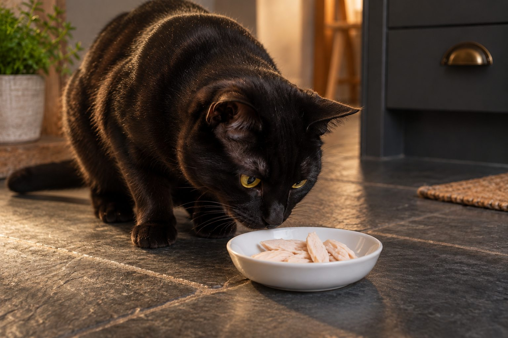

A little fully cooked, unseasoned, boneless chicken can be offered as a treat, but it should not replace complete cat food.
Cats are drawn to chicken, and a small piece can make a useful reward. Preparation matters: a family dinner seasoned with onion, garlic, salt, or sauces is not the same as plain chicken cooked for a pet.
Prepare it safely
Cook chicken thoroughly and let it cool. Remove bones, skin, and excess fat, then cut a small piece that your cat can manage. Cooked bones can splinter and should never be offered.
Avoid onion, garlic, sauces, and heavy seasoning. Keep raw chicken separate from ready-to-eat food and wash surfaces and hands after handling it. Food safety matters for both pets and people.
Choose a plain piece of fully cooked chicken and remove skin, bones, sauces, and seasoning before offering any to a cat. Let it cool, shred a small amount, and supervise the first taste. Cooked bones can splinter or create a blockage, and seasoned leftovers may contain onion or garlic, which the FDA lists among foods to keep from pets. A piece from a family meal is not automatically safe just because the meat itself is chicken. If you cannot confirm the ingredients, use a different treat.
Keep the preparation area clean. Wash hands, utensils, and bowls after handling raw poultry, then store the cooked meat promptly according to food-safety guidance. Do not leave a dish of chicken out for the cat to nibble overnight. Food safety protects the people in the household as well as the pet.
Use it as a treat, not a meal plan
Complete commercial cat food is formulated to supply nutrients a cat needs in the right balance. Chicken alone does not provide that balance, even though it is a source of protein. Keep extras small so your cat still eats their usual food.
If your cat has a prescribed diet, food allergies, or digestive issues, ask your veterinarian before offering new treats. A sudden change in food can cause an upset stomach.
Cats need a complete diet formulated for their life stage. Plain muscle meat, however appealing, does not supply every nutrient in the right balance when used as a meal plan. Keep the cat's regular complete food as the main course and use chicken only as an occasional extra. A cat that fills up on treats may eat less of the food designed to meet its nutritional needs. If the cat has a prescription diet, ask the treating veterinarian whether any chicken is appropriate before offering it.
Count chicken alongside other treats. Tiny pieces are enough for a training reward or a special moment. A cat that begs for more has not demonstrated a nutritional need for it. If weight is changing, review all extras with the veterinary team. A balanced meal is more important than satisfying a preference for one ingredient.

Observe your cat afterward
Offer one small piece first and watch for vomiting, diarrhea, or itching. A cat that refuses food, vomits repeatedly, or seems unwell should be assessed by a veterinarian rather than offered more chicken to tempt them.
Store cooked chicken promptly in the refrigerator and discard it if it has been left out too long. Do not keep a pet portion indefinitely.
Introduce only one new treat at a time and watch appetite, stool, and vomiting over the next day or so. Some cats refuse chicken, and that is fine. Others enjoy it but develop loose stool when given too much. Stop the treat if it causes discomfort. Seek veterinary advice for persistent vomiting, diarrhea, refusal of regular food, or unusual lethargy. Do not keep offering chicken in hopes that it will tempt a cat through an unexplained illness.
If a cat has food allergies or is on an elimination diet, even a small chicken treat can undermine the plan. Discuss rewards with the veterinarian supervising the trial. Similarly, a cat recovering from surgery or illness may have specific feeding instructions. Follow those rather than a general article. The same food can be suitable in one situation and inappropriate in another.
A safe treat preparation check
| Step | Reason |
|---|---|
| Cook fully and leave unseasoned | Avoid raw-poultry germs and unsuitable ingredients. |
| Remove every bone, skin, and sauce | Keep the bite simple and easier to chew. |
| Cool, shred, and offer a tiny amount | Use chicken as a treat while complete cat food remains the main diet. |
Ask the veterinarian before offering extras on a prescription or elimination diet.
Other common mistakes
Do not share chicken with bones, stuffing, gravy, or fried coating. Check packaged products for seasoning and added ingredients. If you are unsure what is in a prepared food, skip it.
Avoid raw chicken as a shortcut. Raw poultry can carry germs that affect cats and people, and home preparation creates opportunities for cross-contamination. Cooking thoroughly and handling the meat hygienically reduces that concern. Do not rely on the belief that a cat's digestive system makes raw food risk-free. The FDA warns that raw pet food can expose animals and people to harmful bacteria. Plain cooked chicken is the safer treat option when a treat is appropriate.
Also avoid deli meat and heavily processed chicken products. They may contain salt, spices, onion powder, or other ingredients not obvious from the name. Read the label rather than assuming a product called chicken is simply meat. If the cat gets into a seasoned dish, keep the ingredient list and call your veterinarian for advice, especially if onion or garlic may be present.
Practical details
Why plain preparation matters
A cat may be interested in chicken from your plate, but a family recipe can include ingredients unsuitable for pets. Onion and garlic are particular concerns, and rich sauces or fried coatings may cause stomach upset. Cooked bones can splinter, while fatty skin adds unnecessary calories. The safe version is plain, boneless meat cooked through and served without seasoning.
Food safety begins before the cat gets a bite. Keep raw poultry away from ready-to-eat foods, clean preparation surfaces, and refrigerate leftovers promptly. Do not leave cooked chicken out in a warm room for hours. A treat should be as carefully handled as food for the people in the household.
Prepare a cat-sized chicken treat
- Cook thoroughlyUse plain chicken cooked through, without onion, garlic, sauces, or heavy seasoning.
- Remove bones and skinDiscard every bone and excess fat; cooked bones can splinter.
- Cool and cutLet the meat cool, then offer one small bite-sized piece first.
- Return to the normal dietKeep balanced cat food as the main meal and treat chicken as an occasional extra.
Why chicken cannot replace cat food
Cats need a balance of nutrients that plain muscle meat alone does not provide. A cat that fills up on chicken may eat less complete food. This is especially important for kittens, pregnant cats, and cats managing a health condition. The correct amount depends on the cat's size and daily calorie allowance, so keep portions tiny and ask your veterinarian for guidance when treats are frequent.
If your cat eats a prescribed diet, even a seemingly harmless treat may interfere with the plan. Get approval before adding extras. A complete and balanced product appropriate for the cat's life stage remains the mainstay; chicken is a small optional reward.
A practical serving plan starts in the kitchen. Put a tiny, unseasoned portion aside before adding sauces or spices to the human meal. Cool it in a clean covered container, then shred a few small pieces for the cat. Refrigerate leftovers promptly and discard them according to ordinary food-safety guidance. This avoids repeatedly offering meat that has sat at room temperature. Do not store the cat's portion on a plate where it can pick up onion or sauce residue.
If several people feed the cat, designate one person to prepare and count treats. This prevents a cat from receiving a full portion from everyone. Use chicken for a brief positive interaction, then return to the normal feeding routine. If the cat starts refusing complete food while waiting for chicken, reduce the extras and ask the veterinarian about appetite.
A first serving and follow-up
Offer one cooled, small piece and watch your cat for vomiting, diarrhea, or a new change in behavior. Do not force a treat on a cat that refuses food. A cat that stops eating, vomits repeatedly, or seems weak needs veterinary attention; offering more tempting chicken is not a substitute for figuring out why appetite changed.
You can use a tiny piece as a reward during gentle handling or to add interest to a puzzle feeder if it fits your veterinarian's advice. Keep the rest safely stored, and discard meat that has been left out too long. The useful rule is simple: plain, cooked, boneless, small, and occasional.
Picture two cats. One receives a few tiny shreds of plain cooked chicken and continues eating its usual complete food. Another receives a bowl of chicken every evening and begins skipping regular meals. The first use is a treat; the second risks an unbalanced diet. The distinction is the share of the diet, not the fact that chicken is a familiar ingredient. Adjust the plan for the cat in front of you.
If the cat has an unexpected reaction after eating chicken, note the portion, preparation method, and all ingredients. A ready description helps a veterinary team advise you. Do not assume that every digestive problem is an allergy; there are several possible causes. The safe routine is fully cooked, plain, boneless meat in a small amount, while the complete cat food remains central.
Think through the whole path from preparation to serving. Set aside unseasoned meat before adding onion, garlic, sauce, or salt to a family meal. Cook it thoroughly, remove skin and bones, cool it, and shred a tiny portion. Refrigerate the rest promptly. This sequence is safer than scraping meat from a seasoned plate. If you cannot verify what the chicken was cooked with, do not offer it. A commercial treat approved for the cat's diet may be a simpler choice.
Keep watching the regular meals. A cat that eats chicken eagerly but refuses its complete food may be receiving too much of a preferred extra or may have another appetite problem. Reduce treats and ask a veterinarian for guidance if the pattern persists. For cats on an elimination or prescription diet, even a little chicken can interfere with a clinical plan. Treats should support the cat's welfare, not replace balanced nutrition or delay investigation of poor appetite.
Keep chicken plain and occasional
Use fully cooked, unseasoned chicken with all bones and skin removed. Serve a small shredded piece after it has cooled. Chicken prepared for people often includes onion, garlic, sauces, or heavy seasoning, so do not assume leftovers are suitable. Store the cooked meat safely and discard it if it has been left out too long.
A cat may love chicken, but meat alone is not a complete feline diet. Keep the regular complete food as the main source of nutrition and count chicken as an extra. If your cat is on a prescription diet, discuss any treats with the veterinarian managing that diet. A sudden menu change can also upset digestion, so offer a tiny trial and watch for vomiting or loose stool.
Some cats will refuse a new texture and some will beg for more. Neither response changes the nutritional role of the treat. Avoid feeding raw chicken as a shortcut; it brings food safety concerns for pets and people. Wash hands, bowls, and preparation surfaces after handling meat. If a cat stops eating its normal meals in favor of treats, scale back and ask for feeding guidance.
Serve chicken in a clean dish rather than leaving pieces around the house. Remove leftovers promptly, especially in a warm room. If you prepare chicken for several days, refrigerate or freeze it safely and portion only what you need. Keep the treat separate from any seasoned family meal.
Continue exploring
For a broader routine, read Can Dogs Eat Bananas? What Pet Owners Should Know, Wet vs Dry Cat Food: What's the Difference?, and How to Switch Dog Food Gradually and Safely.
Frequently Asked Questions
Can cats eat rotisserie chicken?
It is often salty or seasoned, so plain home-cooked chicken is a safer choice.
Can chicken replace cat food?
No. Chicken alone is not nutritionally complete for cats.
Can kittens have cooked chicken?
Ask your veterinarian about treats for your kitten and keep complete kitten food as the main diet.
Editorial references
These resources informed the general guidance in this article. They do not replace advice tailored to your pet.
This guide offers general information. Your pet’s age, health, and history may call for a different plan. For medical concerns, ask your veterinarian.